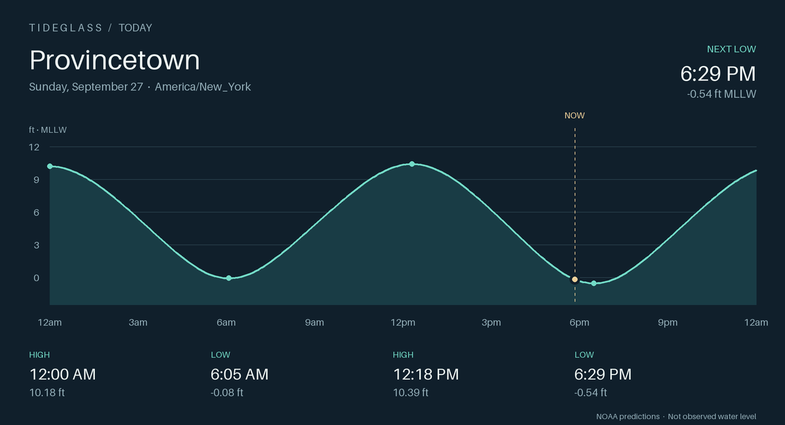
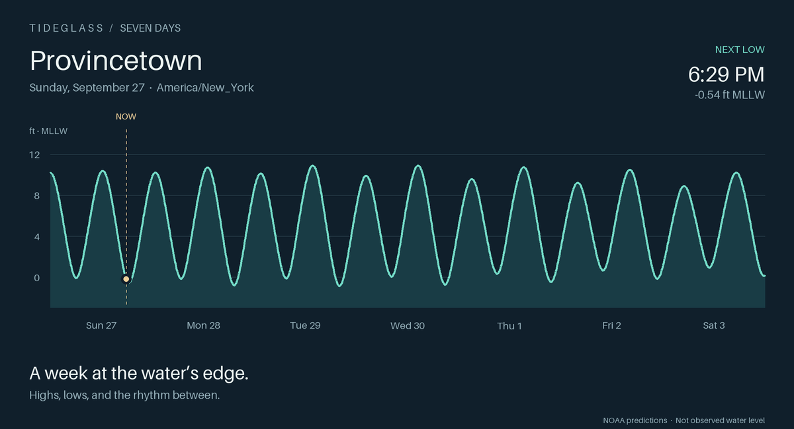

PROVINCETOWN, MASSACHUSETTS
At the water’s edge.
Weather, wind & the rhythm of the harbor.
Design preview · September 27, 2026
Tide snapshot at 5:50 PM EDT
Tide snapshot at 5:50 PM EDT
Provincetown · NWS
61°Fog
Weather snapshot · Humidity 100%
This Afternoon66°Patchy Fog
Tonight59°Patchy Fog
Monday64°Patchy Fog
Monday Night57°Patchy Fog
Tuesday61°Rain Showers Likely

NEXT LOW6:29 PM-0.54 ft · MLLW
NEXT HIGH12:43 AM10.22 ft · MLLW
THE TIDE ISFalling ↘NOAA station 8446121
Weather radar
LIVE MAPWind over the Cape
WINDYA week by the water.
Highs, lows, and the rhythm between.

Sun 27
↗ 12:00 AM 10.18 ft↘ 6:05 AM -0.08 ft↗ 12:18 PM 10.39 ft↘ 6:29 PM -0.54 ft
Mon 28
↗ 12:43 AM 10.22 ft↘ 6:46 AM -0.17 ft↗ 12:59 PM 10.72 ft↘ 7:13 PM -0.79 ft
Tue 29
↗ 1:28 AM 10.13 ft↘ 7:28 AM -0.12 ft↗ 1:42 PM 10.89 ft↘ 8:00 PM -0.85 ft
Wed 30
↗ 2:15 AM 9.91 ft↘ 8:13 AM 0.05 ft↗ 2:28 PM 10.89 ft↘ 8:49 PM -0.73 ft
Thu 01
↗ 3:06 AM 9.59 ft↘ 9:03 AM 0.33 ft↗ 3:19 PM 10.74 ft↘ 9:43 PM -0.47 ft
Fri 02
↗ 4:00 AM 9.22 ft↘ 9:57 AM 0.65 ft↗ 4:15 PM 10.49 ft↘ 10:42 PM -0.14 ft
Sat 03
↗ 5:00 AM 8.91 ft↘ 10:56 AM 0.94 ft↗ 5:16 PM 10.22 ft↘ 11:44 PM 0.14 ft